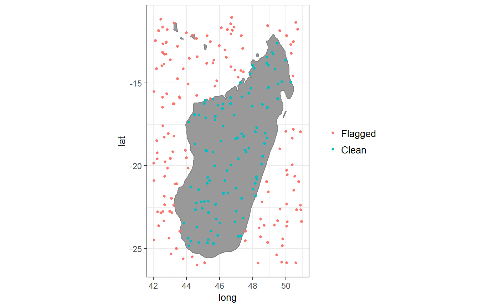
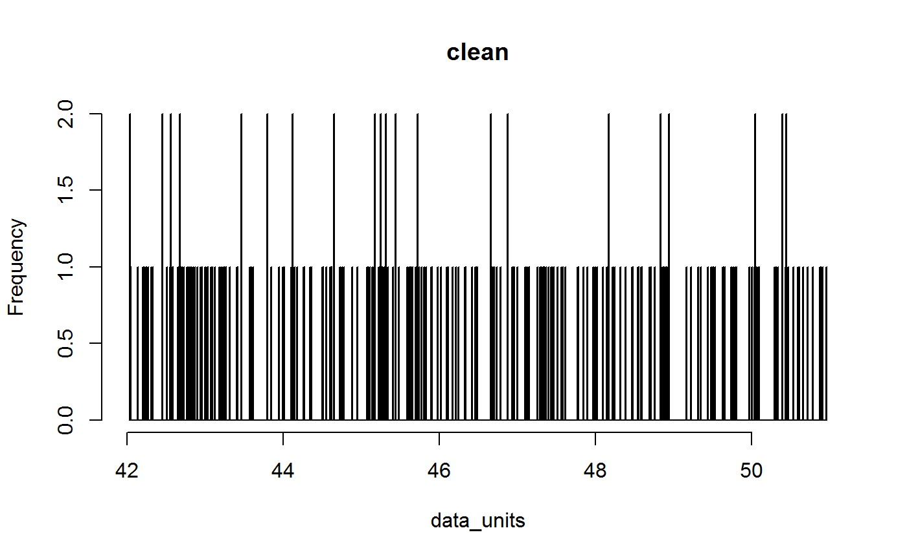
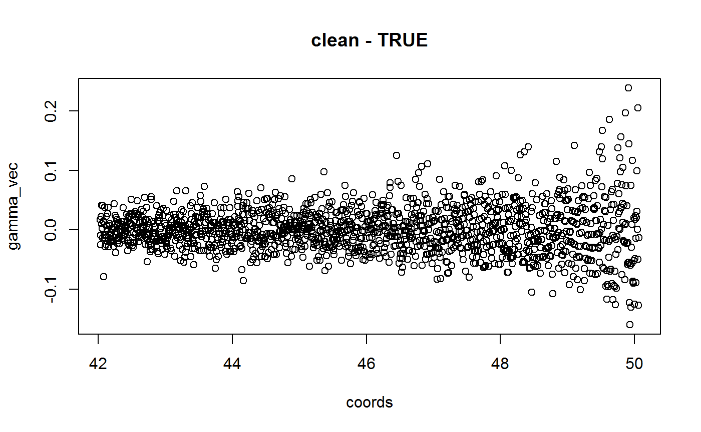
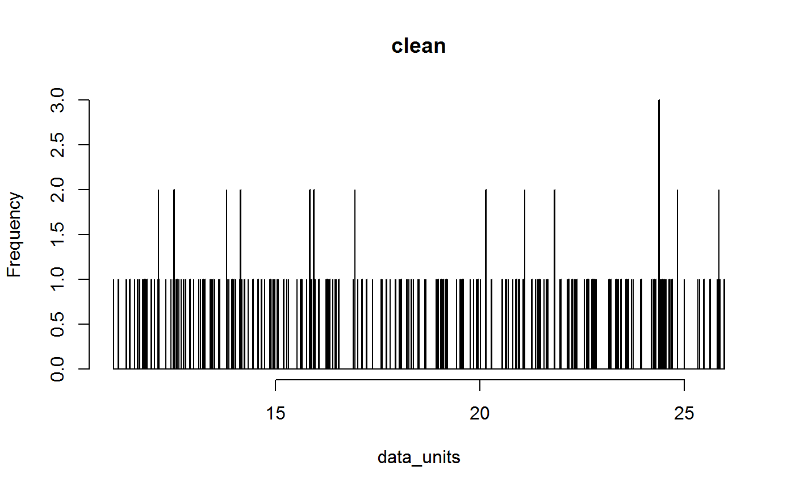
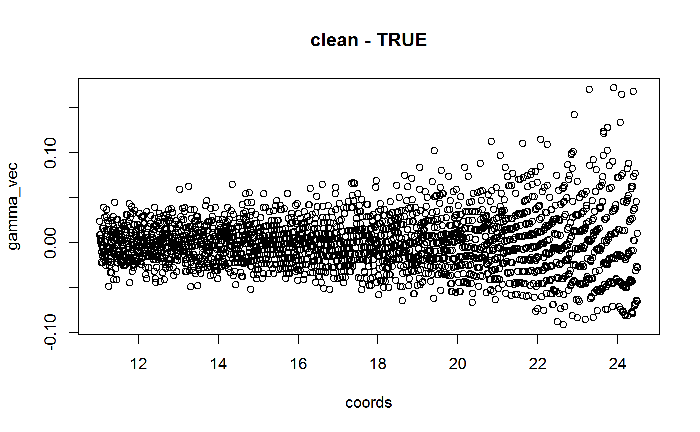
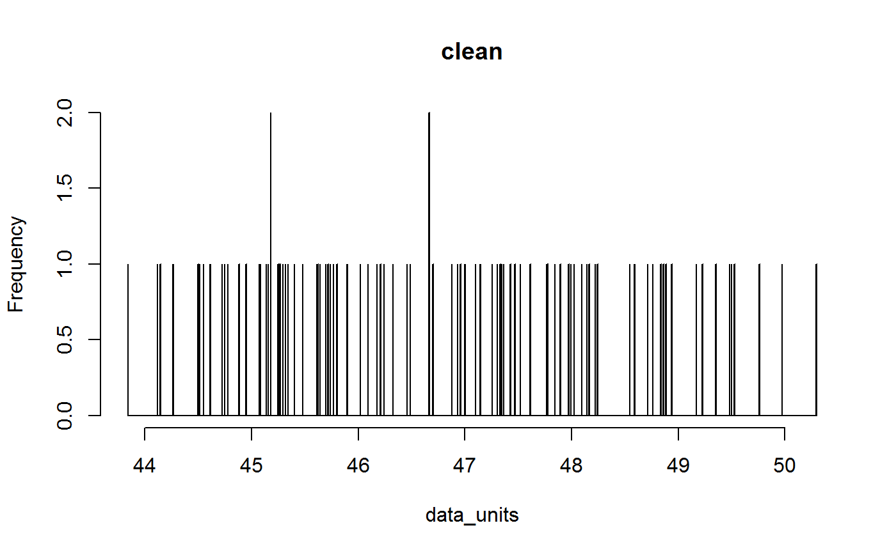
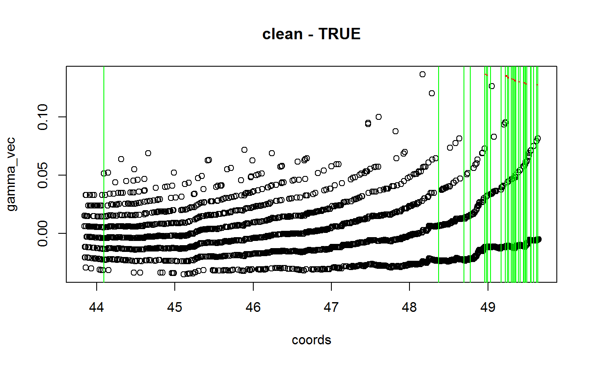
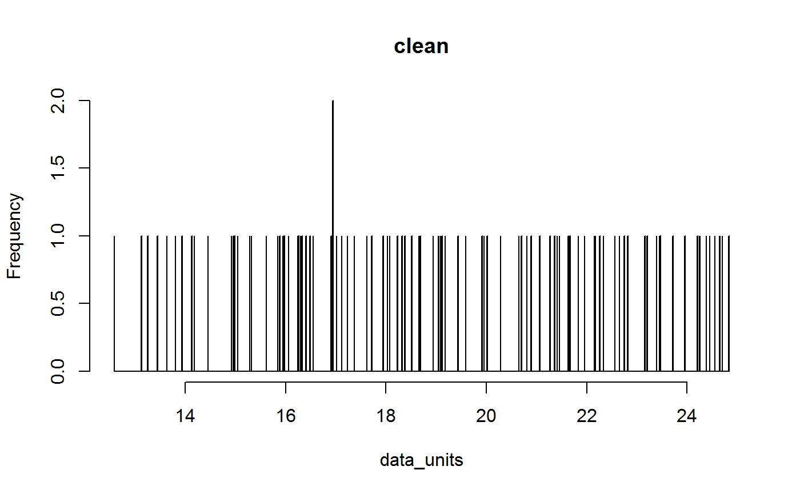
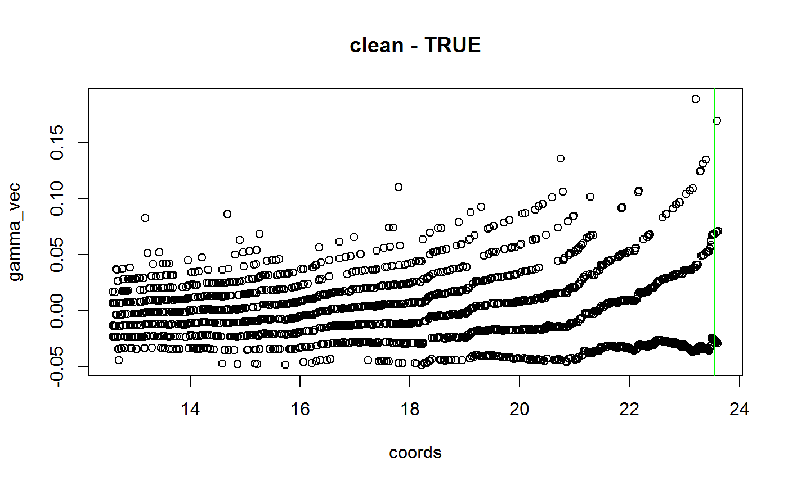

Quickstart_how_to_run.RmdCoordinateCleaner implements three wrapper functions to identify errors common in biological collections. The clean_coordinates function compares coordinates to geographic gazetters to identify potentially problematic records, the clean_dataset function uses dataset properties to test if rasterized collection might be an issue and clean_fossils includes a temporal dimension to clean fossils.
Please find a detailed tutorial on how to clean occurrence records (e.g. from GBIF) here and how to clean fossil data (e.g. from PBDB) here.
You can run Coordinate cleaner with few lines of R code:
library(CoordinateCleaner)
## Registered S3 method overwritten by 'dplyr':
## method from
## as.data.frame.tbl_df tibble
## Registered S3 methods overwritten by 'ggplot2':
## method from
## [.quosures rlang
## c.quosures rlang
## print.quosures rlang
#create example dataset
exmpl <- data.frame(species = sample(letters, size = 250, replace = TRUE),
decimallongitude = runif(250, min = 42, max = 51),
decimallatitude = runif(250, min = -26, max = -11),
dataset = "clean")
#run wrapper function
cord.flags <- clean_coordinates(x = exmpl)
## Testing coordinate validity
## Flagged 0 records.
## Testing equal lat/lon
## Flagged 0 records.
## Testing zero coordinates
## Flagged 0 records.
## Testing country capitals
## Flagged 0 records.
## Testing country centroids
## Flagged 0 records.
## Testing sea coordinates
## OGR data source with driver: ESRI Shapefile
## Source: "C:\Users\alexander.zizka\AppData\Local\Temp\RtmpkfVuT0", layer: "ne_50m_land"
## with 1420 features
## It has 3 fields
## Integer64 fields read as strings: scalerank
## Flagged 146 records.
## Testing geographic outliers
## Flagged 0 records.
## Testing GBIF headquarters, flagging records around Copenhagen
## Flagged 0 records.
## Testing biodiversity institutions
## Flagged 0 records.
## Flagged 146 of 250 records, EQ = 0.58.
#summarize and visualize results
summary(cord.flags)
## decimallatitude val equ zer
## 0 0 0 0
## cap cen sea otl
## 0 0 146 0
## gbf inst summary
## 0 0 146
plot(cord.flags)
#run dataset-level cleaning
ds.flags <- clean_dataset(exmpl)
## Testing for dd.mm to dd.dd conversion errors
## Flagged 0 records
## Testing for rasterized collection
## Flagged 0 datasets.
Alternatively, you can run the individual functions in a pipe compatible way:
library(tidyverse)
## Registered S3 method overwritten by 'rvest':
## method from
## read_xml.response xml2
## -- Attaching packages ------------------------------------------------------------ tidyverse 1.2.1 --
## v ggplot2 3.0.0 v purrr 0.2.5
## v tibble 1.4.2 v dplyr 0.7.6
## v tidyr 0.8.1 v stringr 1.3.1
## v readr 1.1.1 v forcats 0.3.0
## -- Conflicts --------------------------------------------------------------- tidyverse_conflicts() --
## x dplyr::filter() masks stats::filter()
## x dplyr::lag() masks stats::lag()
## x purrr::map() masks maps::map()
cleaned <- exmpl%>%
cc_val()%>%
cc_cap()%>%
cc_cen()%>%
cc_dupl()%>%
cc_equ()%>%
cc_gbif()%>%
cc_inst()%>%
cc_outl()%>%
cc_sea()%>%
cc_zero()%>%
cd_ddmm()%>%
cd_round()
## Testing coordinate validity
## Flagged 0 records.
## Testing country capitals
## Flagged 0 records.
## Testing country centroids
## Flagged 0 records.
## Testing duplicates
## Flagged 0 records.
## Testing equal lat/lon
## Flagged 0 records.
## Testing GBIF headquarters, flagging records around Copenhagen
## Flagged 0 records.
## Testing biodiversity institutions
## Flagged 0 records.
## Testing geographic outliers
## Flagged 0 records.
## Testing sea coordinates
## OGR data source with driver: ESRI Shapefile
## Source: "C:\Users\alexander.zizka\AppData\Local\Temp\RtmpkfVuT0", layer: "ne_50m_land"
## with 1420 features
## It has 3 fields
## Integer64 fields read as strings: scalerank
## Flagged 146 records.
## Testing zero coordinates
## Flagged 0 records.
## Testing for dd.mm to dd.dd conversion errors
## Flagged 0 records
## Testing for rasterized collection